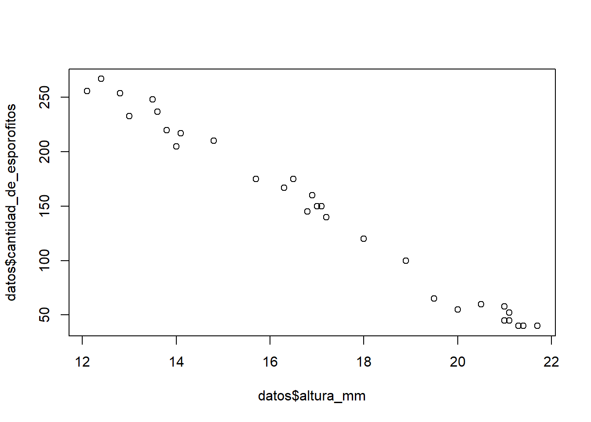
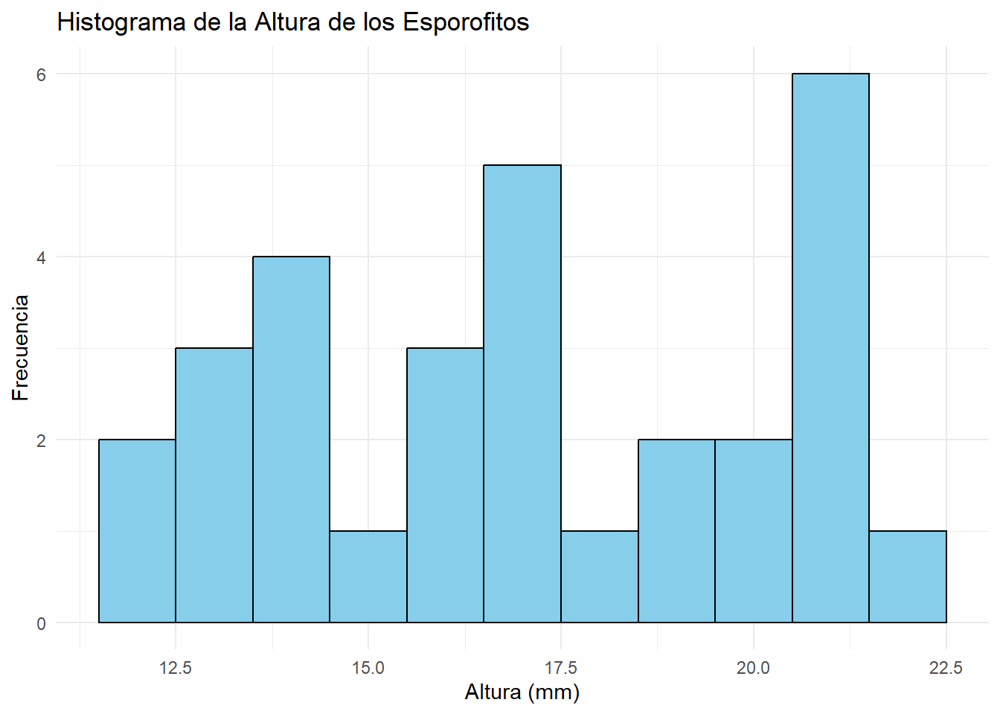

# Instalación y carga de paquetes
# Incluye ggplot2, dplyr, tidyr
if (!require("tidyverse")) install.packages("tidyverse")
# Se utiliza para evaluar el supuesto de homocedasticidad
if (!require("car")) install.packages("car")
# Se utiliza para importar archivos de Excel
if (!require("readxl")) install.packages("readxl")14 Regresión lineal simple usando R
La regresión lineal simple es una técnica estadística utilizada para modelar la relación entre una variable dependiente y una variable independiente. Su propósito principal es predecir el valor de la variable dependiente a partir de la variable independiente, lo que permite entender cómo varía una en función de la otra. Esta técnica es fundamental en el análisis estadístico, ya que proporciona una base para la inferencia y la toma de decisiones en diversos campos (Montgomery, Peck, & Vining, 2012).
Por ejemplo, en economía, la regresión lineal simple puede utilizarse para predecir el consumo en función del ingreso. En biología, se aplica para analizar la relación entre la dosis de un fármaco y la respuesta de un organismo. En ciencias sociales, se utiliza para estudiar cómo factores como la educación influyen en los ingresos de una población (Field, 2013).
14.1 Conceptos fundamentales
Las variables dependientes son aquellas que se desean predecir o explicar, mientras que las variables independientes son las que se utilizan para realizar dicha predicción. La diferencia radica en que la variable dependiente es el resultado que se estudia, mientras que la variable independiente es el factor que se manipula o se observa (Cohen, Cohen, West, & Aiken, 2003).
La relación lineal implica que existe una conexión directa entre las variables, de tal manera que un cambio en la variable independiente produce un cambio proporcional en la variable dependiente.
14.2 Modelo de Regresión Lineal Simple
El modelo de regresión lineal simple se expresa mediante la siguiente ecuación:
En esta ecuación, Y representa la variable dependiente, X es la variable independiente, ß0 es la intersección (el valor de Y) cuando X) es cero) y ß1 es la pendiente (que indica el cambio en Y) por cada unidad de cambio en X. El término epilson (ε) representa el error del modelo, que captura la variabilidad en Y que no se explica por X (Kutner, Nachtsheim, Neter, & Li, 2005).
14.3 Supuestos de la Regresión Lineal
Para que el modelo de regresión lineal sea válido, es fundamental que se cumplan ciertos supuestos:
Linealidad: La relación entre las variables debe ser lineal.
Independencia: Las observaciones deben ser independientes entre sí.
Homoscedasticidad: La varianza de los errores debe ser constante a lo largo de todos los niveles de X.
Normalidad: Los errores deben seguir una distribución normal (Tabachnick & Fidell, 2013).
14.4 Evaluación del Modelo
La calidad del modelo de regresión lineal simple se evalúa a través de varias métricas:
R-cuadrado: Indica la proporción de la variabilidad en la variable dependiente que es explicada por la variable independiente. Un valor cercano a 1 sugiere un buen ajuste del modelo.
Análisis de residuos: Es crucial analizar los residuos para verificar los supuestos del modelo, asegurando que no haya patrones sistemáticos que indiquen un mal ajuste (Belsley, Kuh, & Welsch, 1980).
14.5 Ejemplo Práctico
Este ejemplo práctico ilustra cómo realizar un análisis de regresión lineal simple utilizando un conjunto de datos sobre esporofitos. Los datos provienen de un estudio realizado en el laboratorio de cultivo de tejidos de la Facultad de Agronomía de la Universidad de San Carlos de Guatemala. En este estudio, se llevó a cabo la reproducción del helecho conocido como calahuala (Phlebodium pseudoaureum (Cav.) Lellinger).
Se midió la altura de cada esporofito y se cuantificó la cantidad de esporofitos germinados en 30 frascos que contenían medio de cultivo Murashige y Skoog. Los resultados obtenidos se presentan en el siguiente archivo. Este análisis se basa en la investigación de Rosales Castillo (2005), quien realizó una micropropagación de Calahuala utilizando tres tipos de explantes en diferentes medios de cultivo in vitro.
El objetivo de este análisis es evaluar la relación entre la altura de los esporofitos y la cantidad de esporofitos germinados, utilizando la regresión lineal simple como herramienta estadística. A través de este proceso, se busca no solo ajustar un modelo que explique esta relación, sino también verificar los supuestos que sustentan la validez del modelo.
14.5.1 Instalación y Carga de Paquetes
Para comenzar, es necesario instalar y cargar los paquetes requeridos. Estos paquetes proporcionan funciones útiles para la manipulación de datos y la visualización.
Explicación:
tidyverse: Este paquete incluye varias herramientas para la manipulación y visualización de datos, comoggplot2,dplyrytidyr.car: Proporciona funciones para realizar pruebas de hipótesis y diagnósticos de modelos, incluyendo la evaluación de homocedasticidad.readxl: Permite importar datos desde archivos de Excel, facilitando la carga de conjuntos de datos.
14.5.2 Importación de Datos
A continuación, se importan los datos desde un archivo Excel.
# Importar un archivo csv
datos <- read_excel("esporofitos.xlsx")
# Visualizar los primeros registros del data frame
head(datos)# A tibble: 6 × 3
frasco cantidad_de_esporofitos altura_mm
<dbl> <dbl> <dbl>
1 1 40 21.4
2 2 45 21
3 3 60 20.5
4 4 55 20
5 5 58 21
6 6 40 21.7Explicación:
read_excel("esporofitos.xlsx"): Carga el archivo de Excel que contiene los datos sobre esporofitos.head(datos): Muestra las primeras filas del conjunto de datos para verificar que se haya importado correctamente.
14.5.3 Visualización de Datos
Se elabora un gráfico de dispersión para observar la relación entre las variables.
# Elaboración de un gráfico de dispersión entre altura y cantidad
plot(datos$cantidad_de_esporofitos, datos$altura_mm)
Explicación:
Este gráfico permite visualizar la relación inversamente proporcional entre la cantidad de esporofitos y la altura en milímetros. Una relación lineal puede ser observada visualmente.
14.5.4 Ajuste del Modelo de Regresión
Se ajusta el modelo de regresión lineal simple utilizando la función lm().
# Ajuste del modelo
regsimple <- lm(datos$cantidad_de_esporofitos ~ datos$altura_mm)
summary(regsimple)
Call:
lm(formula = datos$cantidad_de_esporofitos ~ datos$altura_mm)
Residuals:
Min 1Q Median 3Q Max
-20.3681 -3.7261 -0.4503 6.4108 15.8646
Coefficients:
Estimate Std. Error t value Pr(>|t|)
(Intercept) 564.8555 9.4053 60.06 <2e-16 ***
datos$altura_mm -24.5891 0.5409 -45.46 <2e-16 ***
---
Signif. codes: 0 '***' 0.001 '**' 0.01 '*' 0.05 '.' 0.1 ' ' 1
Residual standard error: 9.29 on 28 degrees of freedom
Multiple R-squared: 0.9866, Adjusted R-squared: 0.9862
F-statistic: 2067 on 1 and 28 DF, p-value: < 2.2e-16Explicación:
lm(): Esta función ajusta un modelo de regresión lineal donde la cantidad de esporofitos es la variable dependiente y la altura es la variable independiente.summary(regsimple): Proporciona un resumen del modelo ajustado, incluyendo coeficientes, errores estándar y estadísticas de ajuste.
14.5.5 Gráficos de Diagnóstico para evaluar los supuestos del modelo
Se generan gráficos de diagnóstico para evaluar los supuestos del modelo.
# Gráficos de diagnóstico de los supuestos
par(mfrow=c(1,2)) # Crea una matriz de dos gráficos
plot(regsimple, which=1:2)
par(mfrow=c(1,1)) # Devuelve a su estado normal el área de gráficosExplicación:
par(mfrow=c(1,2)): Configura el área de gráficos para mostrar dos gráficos en una fila.plot(regsimple, which=1:2): Genera los gráficos de residuos y ajuste, que ayudan a verificar la linealidad y la homocedasticidad.
14.5.6 Prueba de Normalidad de los Residuos
Se realiza la prueba de Shapiro-Wilk para evaluar la normalidad de los residuos.
# Realizar la prueba de Shapiro-Wilk en los residuos
shapiro.test(residuals(regsimple))
Shapiro-Wilk normality test
data: residuals(regsimple)
W = 0.96712, p-value = 0.4636Explicación:
shapiro.test(residuals(regsimple)): Esta prueba evalúa si los residuos del modelo siguen una distribución normal. Un valor p bajo (generalmente < 0.05) indica que los residuos no son normales.
14.5.7 Prueba de Homocedasticidad de la varianza
Finalmente, se evalúa el supuesto de homocedasticidad utilizando la prueba de heterocedasticidad.
# Realizar prueba para el supuesto de homocedasticidad
ncvTest(regsimple)Non-constant Variance Score Test
Variance formula: ~ fitted.values
Chisquare = 0.2273293, Df = 1, p = 0.63351Explicación:
ncvTest(regsimple): Esta función evalúa si la varianza de los residuos es constante a lo largo de los valores de la variable independiente. Un valor p bajo sugiere que hay heterocedasticidad, lo que puede invalidar el modelo.